Windows
One executable: put it in a folder with your BMS folders inside and run it. It checks for a newer nightly when it starts.

A cross-platform BMS player for Windows, macOS, Linux, Android, iOS and the web.
Early development (0.1) Builds of the latest commit, published every night.
Modelled on Lunatic Rave 2 and beatoraja. Still early (0.1): expect rough edges and changes.
Windows, macOS and Linux (x64 and ARM), Android, iOS and web browsers (wasm), with an on-screen controller for phones and tablets.
BMS/BME/BML/PMS and BMSON: 5, 7, 10, 14 and 9 keys, plus 4, 6 and 8 keys; #RANDOM, BPM changes, STOP, #SCROLL, LN and mines.
beatoraja, LR2 and IIDX judge presets or your own windows; gauges from ASSIST EASY to HAZARD; RANDOM options, hi-speed types and lane covers.
Built-in default skins for landscape and portrait, a touch perspective skin, and LR2 (.lr2skin) and beatoraja (JSON, Lua) skins.
bmstable difficulty tables, with the common ones built in; a chart you lack can be downloaded from the links its author and the tables give.
.zip, .7z, .rar, .lzh and .tar song packs are played without unpacking them yourself.
A practice screen per chart, a replay of every play, G-BATTLE against your own best, courses, and IR rankings.
It starts at song select and every setting is changed in the game; data lives next to the executable. English, Korean, Japanese and Chinese UI.
The "vibe" is the music's, and the way it is made: nearly all of the code and the default skins were written with an AI coding agent (Claude Code), while a person set the direction and checked the results by playing.
Shown with generated test charts and the built-in default skins.
Nightly builds of the latest commit. They are development builds: settings and records may change between them.
One executable: put it in a folder with your BMS folders inside and run it. It checks for a newer nightly when it starts.
Drag the app to Applications. It is not notarized: open it the first time with right-click → Open, or in System Settings → Privacy & Security → Open Anyway.
Executables: chmod +x vibebms-* and xattr -d com.apple.quarantine vibebms-*.
chmod +x vibebms-*. Needs glibc 2.35 and WebKitGTK 4.1 (libwebkit2gtk-4.1-0, for the download browser).
Portable: starts with glibc 2.28 and ALSA, without the download browser.
flatpak install --user vibeBMS-linux-x64.flatpak (the runtime comes from Flathub). It does not update itself: install a newer bundle the same way.
Download the APK and install it (Android asks to allow installs from your browser or file manager).
Updates through F-Droid Add this repository once in F-Droid, Droid-ify or Neo Store, and each nightly is offered as an update of “vibeBMS Nightly”:
https://raw.githubusercontent.com/vibeBMS/vibe/fdroid-repo/repo
Its fingerprint and a one-tap link are in fdroid.txt.
Unsigned: sideload it, e.g. with AltStore, SideStore or LiveContainer. For updates, add the source in AltStore or SideStore:
https://github.com/vibeBMS/vibe/releases/download/nightly/altstore.json
Songs you add stay in the browser; nothing is uploaded. The zip: unzip it and serve the folder over HTTP(S).
Or build it yourself: cargo run --release (see docs/BUILDING.md).
The BMS player (Rust, wgpu, cpal).
A BMS library tool: it reads difficulty tables, downloads the songs your library lacks from the links their authors and the tables give, unpacks them, and puts separate charts (差分) into their songs' folders. vibe uses it as a library; it also comes as a window (Go), a command-line tool and a web page.
Open in browser · Source · Issues
Linux / macOS: chmod +x bmseeker-*; on macOS also xattr -d com.apple.quarantine bmseeker-*. Linux needs glibc 2.35. Web build: bmseeker-web.zip.
Before turning on third-party sources, read Third-party sources and disclaimer.
The BMS event mirror: event entries kept so they stay downloadable after the links posted during the event go away, each archive as its author published it.